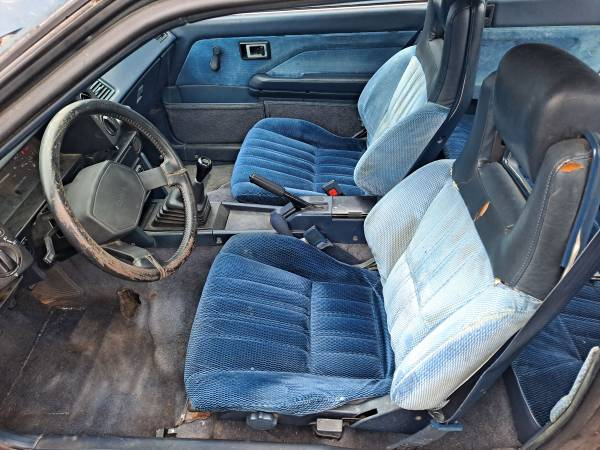

1986 Toyota Corrola - ignition issue - $500 (portland)

(add toyota-1.jpg)

(add toyota-2.jpg)
Friday night comes and I’m standing there gawking into the closet wondering what the hell to wear for this thing. It seems weird to wear the same clothes I wear to practice and it seems weird not to. I decide on a slightly nicer plaid shirt, one I typically reserve for birthday parties and the offhand date night. There’s only one clean pair of jeans, so that’s a no-brainer. I grab my mask and my guitar case and head for the door. The hall mirror stops me and I can’t help but set the guitar down for a second and become Tom. I slip the mask over my face, adjust the elastic, and Tom smiles back at me, reassuring. I take the guitar from the case, and the Tom before me strums a chord, up and down, gently, gently. I think we can do this.
Down the stairs. Out the side door. Kinda embarrassed that I’m practically skipping across the asphalt and kinda don’t care. I toss the guitar case in the back seat and turn the key.
Nothing. Not even an attempt at turning over. Just dead. Fuck. Not now.